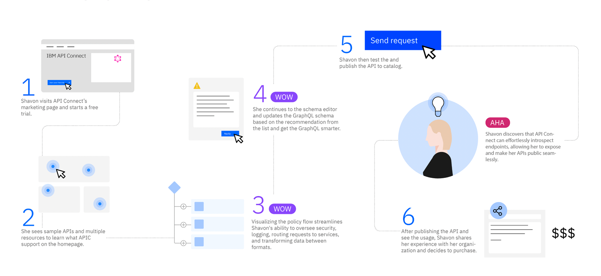
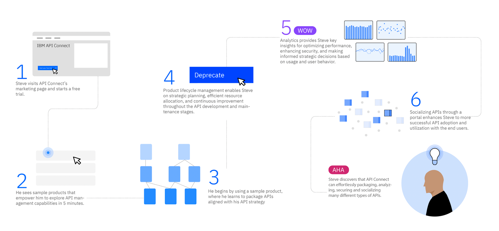
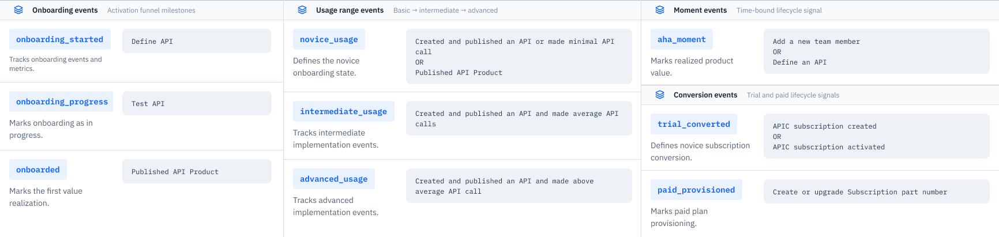
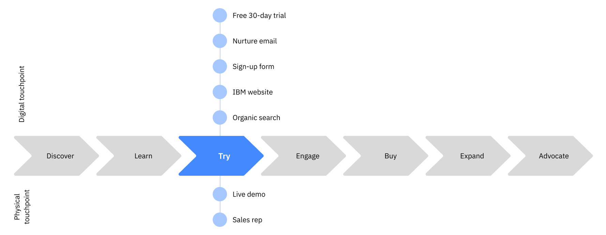
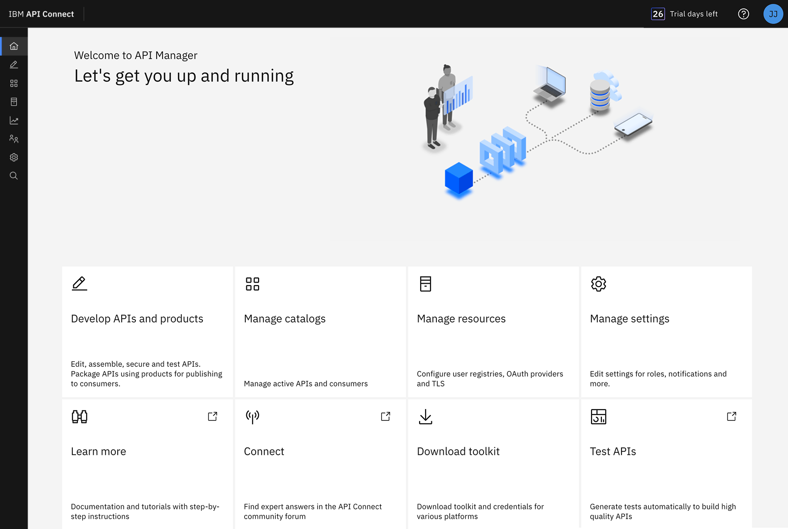
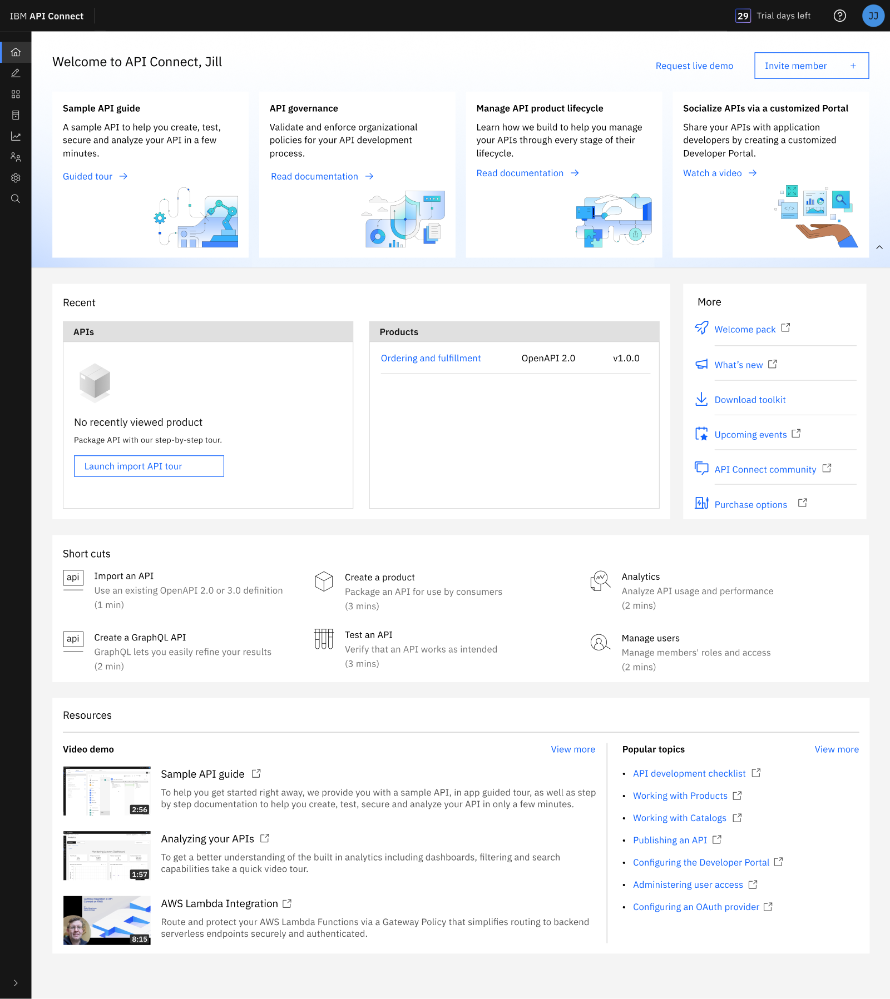
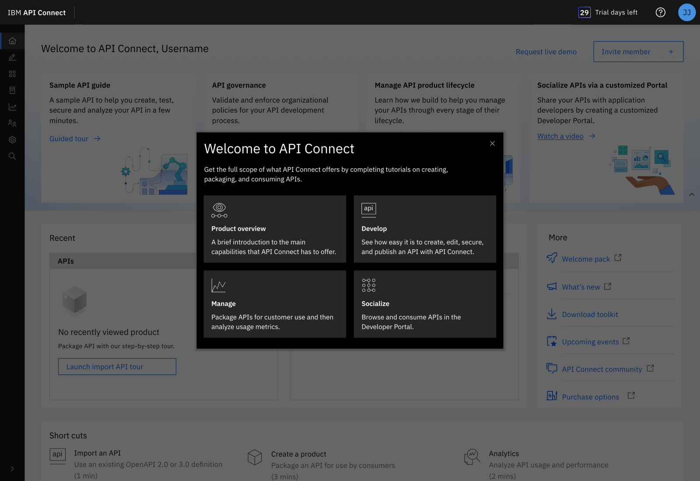
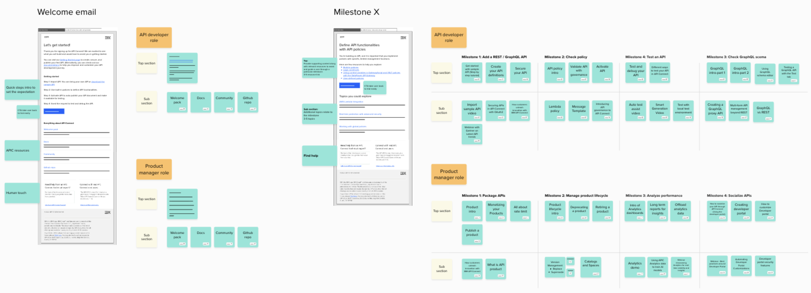
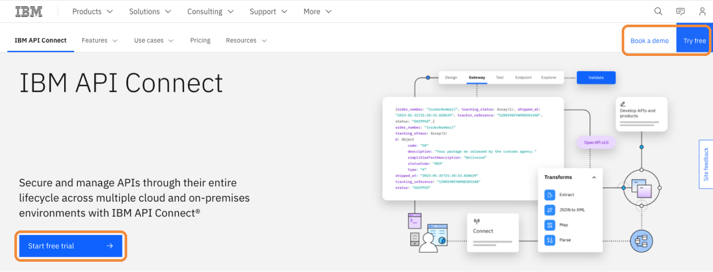
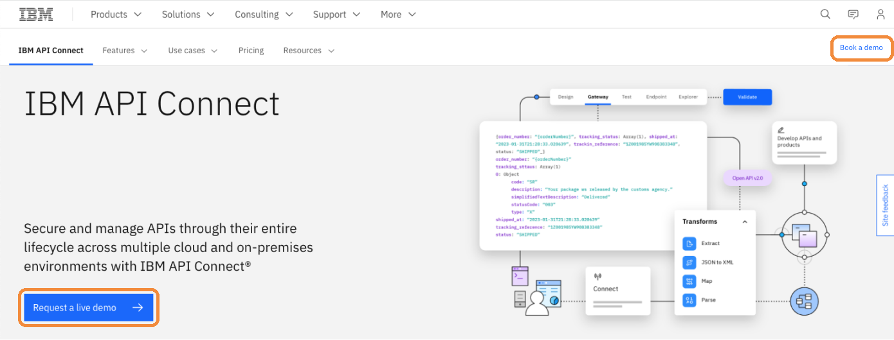

The assumption
In 2022, the company moved its software portfolio to SaaS. Along with it came a premise nobody questioned: product-led growth would work. People would find the product, try it, and buy it themselves. Sales wouldn't need to be in the room.
I was the design lead for that move on API Connect, an enterprise API management platform that had always been on-premise. My job was to make self-serve work.
Mapping the journey
We defined two personas, the API product manager and the API developer, and I mapped each of them end to end: what they arrive to do, where the product first earns their attention, where understanding lands.


A map like that is a hypothesis. It says what should happen. It can't tell you what does — and for this product, nothing could. On-premise software runs in the customer's own data center, so we had never been able to see who used it or where they got stuck. Years of design decisions had been made on interviews and inference.
SaaS changed that, and building the capability was mine to do. I defined what to track, set up the analysis in Amplitude, and brought behavioral data back to the design team for the first time.

Where we focused: Try
The journey runs from first search through to renewal, which is more than one team can carry, so it was also a scoping tool.

Marketing owns the early stages. Sales has historically owned the purchase. Try is where a product-led motion either works or doesn't — the one place where the product itself has to do the convincing. So that's where we put the design effort.
Three interventions carried most of it.
The homepage. The old one gave you eight identical cards and no answer to the only question a new user has: where do I start? On a 30-day trial, someone who can't find the first step rarely takes a second.
Since the page couldn't know who you were, I gave it three ways in rather than one prescribed path: tiles that show what the product can do, shortcuts that get something done in one to three minutes, and resources for learning at your own pace. One layout that directs a first-time API developer and a returning product manager without having to ask which one is looking.


One homepage change I pushed back on, and lost. The playbook wanted the community link front and center. I argued the precondition wasn't there: our community content was thin, and a more visible link to thin content is still thin content. What we needed was a content system, not a bigger link. The link moved up the page anyway, and Amplitude showed no change in how often people used it.
Guided tours, scoped by the data. Amplitude showed higher task completion when a tour was attached, so I extended tours across the main tasks rather than guessing where guidance belonged.

Nurture email, on two systems. Task-based messages follow events: finish a milestone, get what you need for the next one. Time-based messages follow the clock, checking in across the trial. The second exists because of the people the first can't see. When someone stalls they stop generating events, and an event-driven system goes quiet exactly when someone needs it most.

The assumption underneath all of it was explicit: get trial users engaged, and purchase intent follows.
Activation went up. Revenue didn't move.
People were getting further into the product than ever before. Nothing happened to the business.
I went back to the data, and the data couldn't help me: we didn't have enough trial users for the numbers to reach significance. Every test came back inconclusive.
So I stopped optimizing and asked a different question. Not what do users want, but how does this product actually get bought?
Self-serve assumes the user and the buyer are the same person. Here, they weren't.
The person who decides
I ran a buyer journey study with sales and technical sales — not asking what users wanted, but how this product actually gets bought. It took three conversations to find the answer.
The people we'd designed for don't buy anything. They evaluate, and they report back. Then a third role — one that had never appeared on a persona board — makes the call.
The CTO. Someone who will never open the product, never see a guided tour, never read one of our emails.
Both persona journeys I'd drawn ended the same way: the user reaches the moment of understanding, and then decides to purchase. That last step was the assumption, sitting in plain sight in our own artifacts for a year, drawn as though it were a finding.
One change
The entry point went from start a trial to request a demo.
It sounds small. It isn't. It reverses the premise: instead of letting someone evaluate the product alone and hoping they convince their organization, we put a person in the room at the start, where all three roles can be. The technical roles see the product; the CTO hears the case.


The journey map had shown demo and sales as touchpoints available at Try all along. The playbook had just told us not to use them.
Deals started closing. Not many, and I won't claim we cracked it. Product-led growth was not the right motion for this product: it's complex, it's expensive, and buying it takes a human conversation. We learned that and moved on.
What I learned
What stayed matters more than what didn't. The work left the product with an end-to-end journey framework, behavioral instrumentation it had never had, and a buyer model that includes the person who signs. None of that depended on the strategy being right.
Personas are built around who uses the product, not who decides. In consumer products those are the same person, so it never surfaces. In enterprise they rarely are, and that gap is where growth strategies fail quietly. If I ran this again, sales would be in the room when we defined personas.
The difference in outcome was a difference in evidence. Round one came from a comment overheard at a conference: users said they wanted guided tours. We spent months on it. Round two came from going and finding out how buying actually worked, and it barely took a week.
I couldn't control whether a deal closed. What I could own was whether every touchpoint along the way had someone thinking about it.